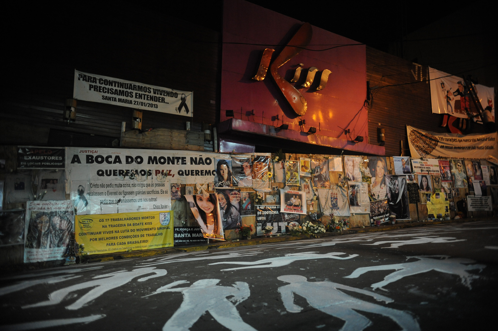
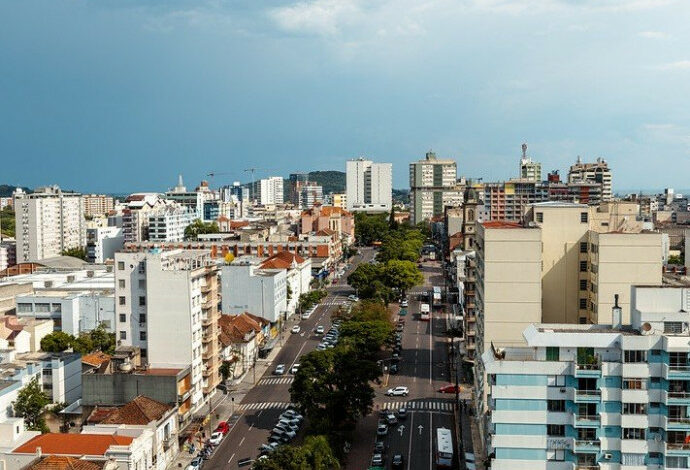

O Novo Desdobramento
Recentemente, novos desenvolvimentos surgiram em relação ao trágico incêndio que ocorreu na boate Kiss. A tragédia, que deixou um número significativo de vítimas em 2013, continua a ter repercussões profundas na comunidade e no sistema de justiça.
Investigações e Ações Legais
As investigações sobre o caso têm avançado com novas evidências e depoimentos. Recentemente, o processo judicial recebeu uma nova injeção de vida com a inclusão de testemunhas adicionais e o reforço das alegações contra os responsáveis. As autoridades estão empenhadas em garantir que justiça seja feita para as vítimas e suas famílias.
Impacto na Comunidade
A tragédia da boate Kiss teve um impacto duradouro na cidade e em todo o país. O incidente provocou uma onda de reformas nas normas de segurança para eventos públicos e levantou questões sobre a responsabilidade dos estabelecimentos em garantir a segurança de seus frequentadores.
Reações da Comunidade
As reações à nova fase das investigações têm sido variadas. Enquanto muitos cidadãos expressam apoio às famílias das vítimas e aos esforços para que o caso seja resolvido, outros estão preocupados com a lentidão do processo judicial e a possibilidade de que a justiça não seja plenamente alcançada.
Próximos Passos
À medida que o caso continua a se desenrolar, a comunidade e as autoridades permanecem atentas aos próximos passos. Espera-se que as próximas fases do processo tragam mais clareza e avanços significativos para que as vítimas e suas famílias finalmente recebam a justiça que merecem.